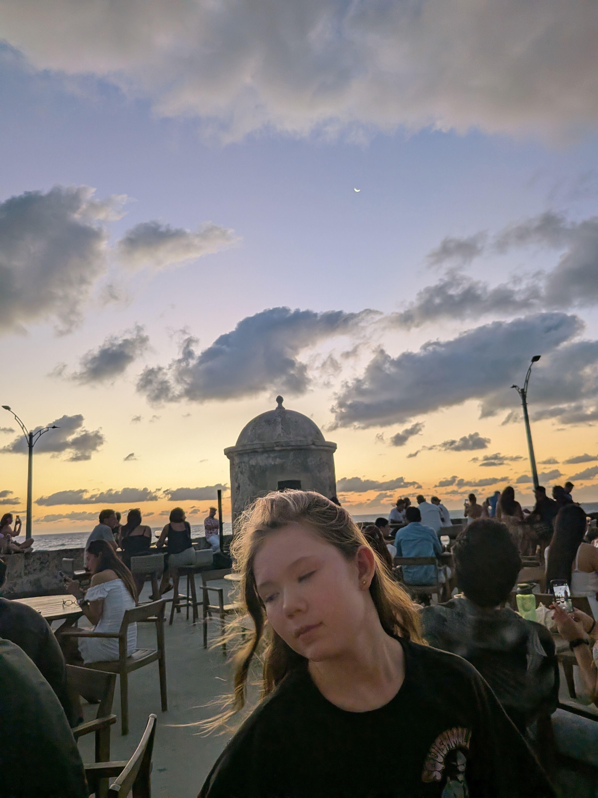
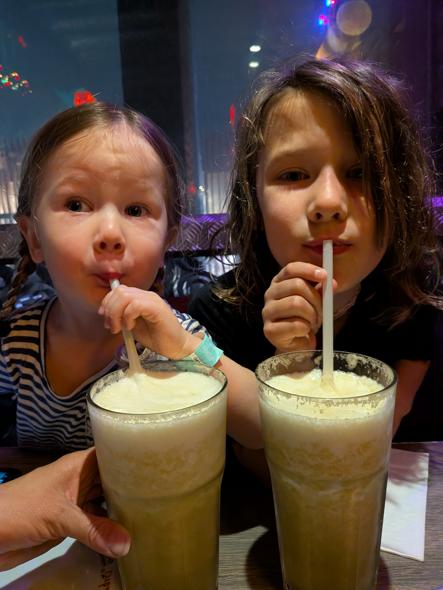
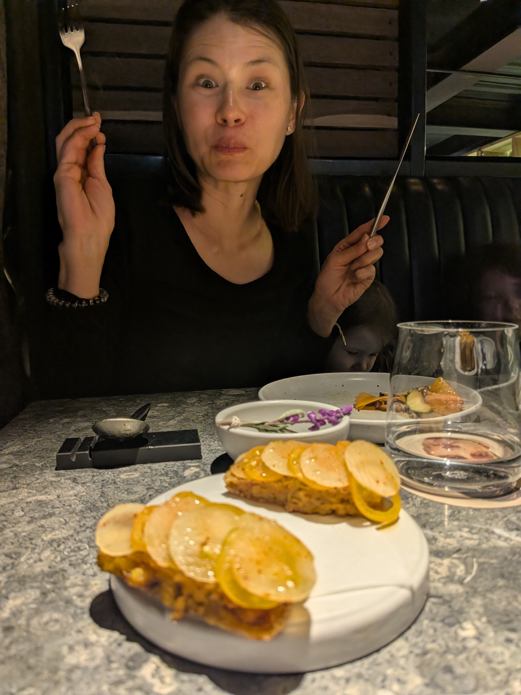

Fri 20 Mar — Arrival in Cartagena
After a long travel day we landed on the Caribbean coast and checked into the InterContinental Cartagena in the breezy high-rise district of Bocagrande. That night we headed into the walled old city for dinner at Juan del Mar on the lively Plaza de San Diego — seafood, thin-crust pizza and live music under the Caribbean sky. It had been a big day of travelling, though, and before the mains even arrived Sorenne had curled up across the chairs, completely passed out. A great sign of adventures to come!

Sat 21 Mar — Forts, Sculptures and a Sunset on the Walls
Our first full day was pure Cartagena. We started in Bocagrande, posing with a giant reclining bronze sculpture beneath the palm-lined high-rises, then climbed up to the mighty Castillo San Felipe de Barajas. The girls loved exploring the fort's dark stone tunnels and scrambling along the ramparts under the Colombian flag. As the heat faded we walked the old city walls (Las Murallas) and joined the crowd for a spectacular sunset over the sea. We ended the evening with drinks and dinner up on the ramparts at Café del Mar, watching a sliver of crescent moon rise over the old sentry boxes.




Sun 22 Mar — By Boat to the Islands
Time for the islands! We met up with friends and set off by boat from Cartagena across the bay to the Barú peninsula — a gorgeous ride out past the city skyline and onto the turquoise water. Our home for the next few days was Hotel Las Islas, a barefoot-luxury resort tucked into the dry tropical forest of the Rosario Islands. Wooden boardwalks wound through the trees between the cabins. Dinner that night was magical — candlelit tables under the canopy, rustic carved wooden cups, and the sound of the forest all around us.


Mon 23 – Wed 26 Mar — Island Days: Beaches, Birds & Snorkeling
A glorious stretch of slow island days. We swam in the warm Caribbean, let the girls run wild between the beach and the forest trails, and ate beautifully. One day we visited the Aviario Nacional de Colombia on Barú, wandering among flamingos, macaws, toucans and dozens of other tropical birds. On another, Sorenne and Dad took a snorkeling trip out among the reefs of the Rosario Islands — cruising past the famous abandoned Pablo Escobar island house on the way. The rest was hammocks, fresh fruit, and not much of a schedule — exactly what we needed.


Fri 27 Mar — Up to Bogotá
From sea level to 2,600 metres! We flew up to the cool, mountain-ringed capital of Bogotá and checked into the Embassy Suites in the leafy Zona G / Rosales district. First stop was Cerro de Monserrate, riding up for sweeping views over the endless city (and the obligatory photo with the big BOGOTÁ letters). Then we dove into the chaos of Paloquemao market, where our guide had us tasting wild Colombian fruits we'd never seen before — lulo, mangostino, guanábana and more. The girls capped the afternoon with a session at a local bouldering gym, then we celebrated with a Lebanese feast at El Árabe in Zona G.



Sat 28 Mar — Gardens, a Last Great Meal and Home
For our final day we wandered the Jardín Botánico de Bogotá, ducking through greenhouses and rose gardens in the morning sun. We treated ourselves to one last beautiful Bogotá lunch — elegant plates that were almost too pretty to eat — before heading to the airport. ¡Adiós, Colombia! From the walls of Cartagena to the island beaches to the heights of the Andes, what a trip. The girls are already asking when we can come back.




Trip Highlights
- Dinner at Juan del Mar on Plaza de San Diego
- Castillo San Felipe de Barajas and its tunnels
- Sunset and drinks at Café del Mar on the city walls
- The boat ride out to the Rosario Islands
- Snorkeling past Pablo Escobar's island house
- The flamingos and macaws of the Aviario Nacional
- Barefoot days at Hotel Las Islas
- Views from Cerro de Monserrate
- Tasting wild fruits at Paloquemao market
- A Lebanese feast at El Árabe